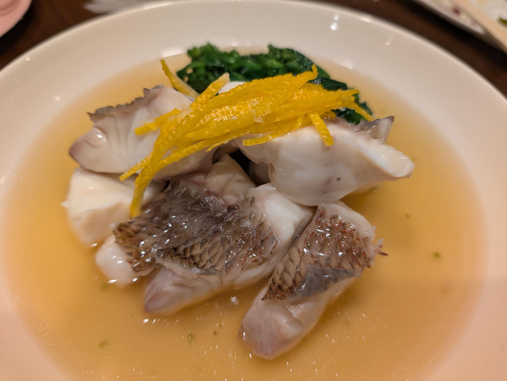
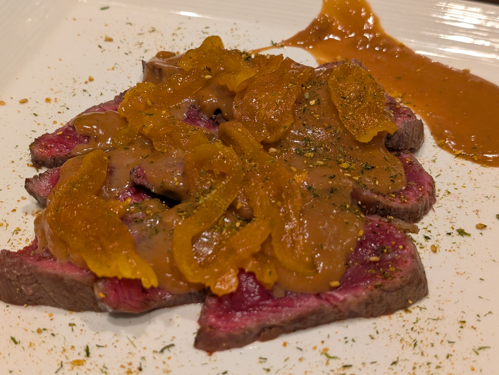
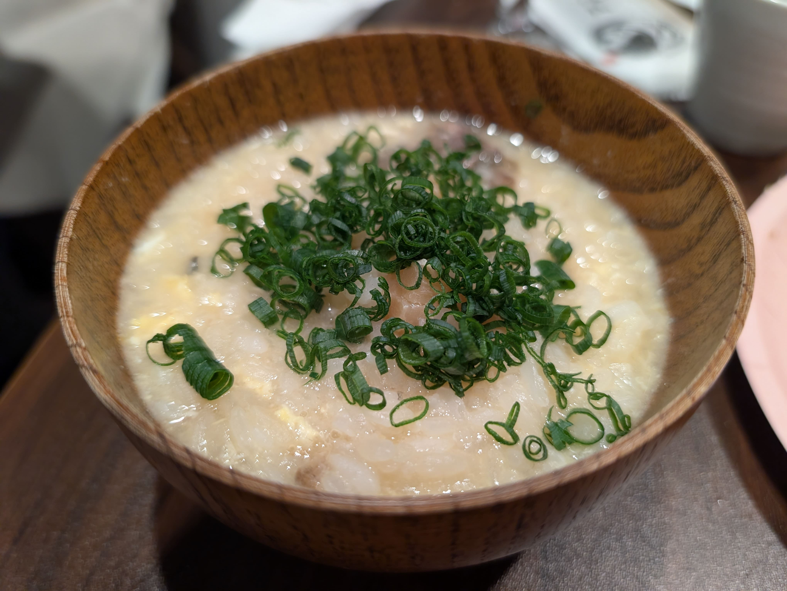
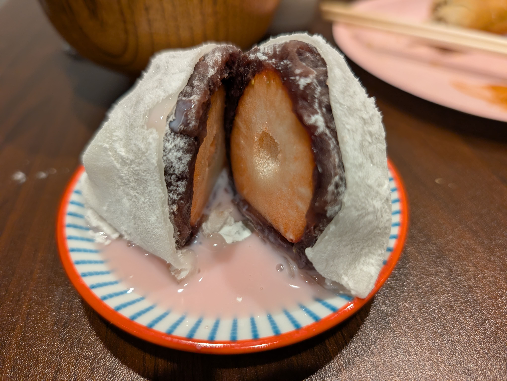
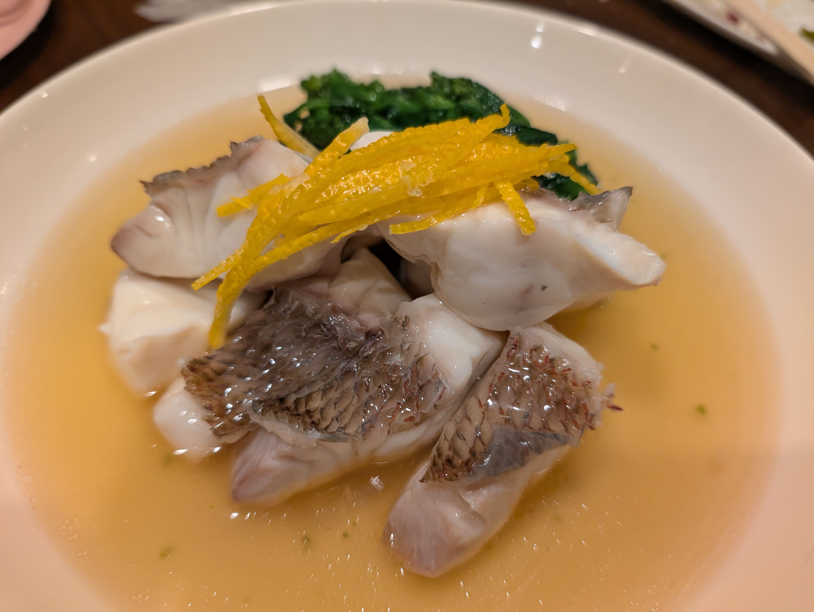
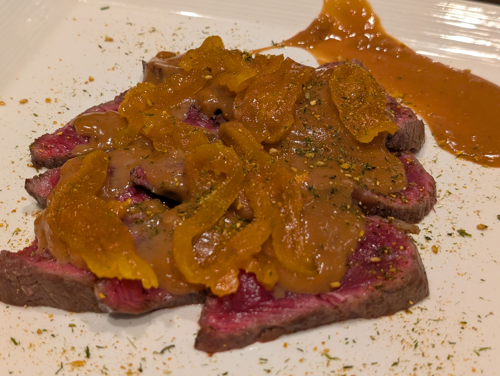
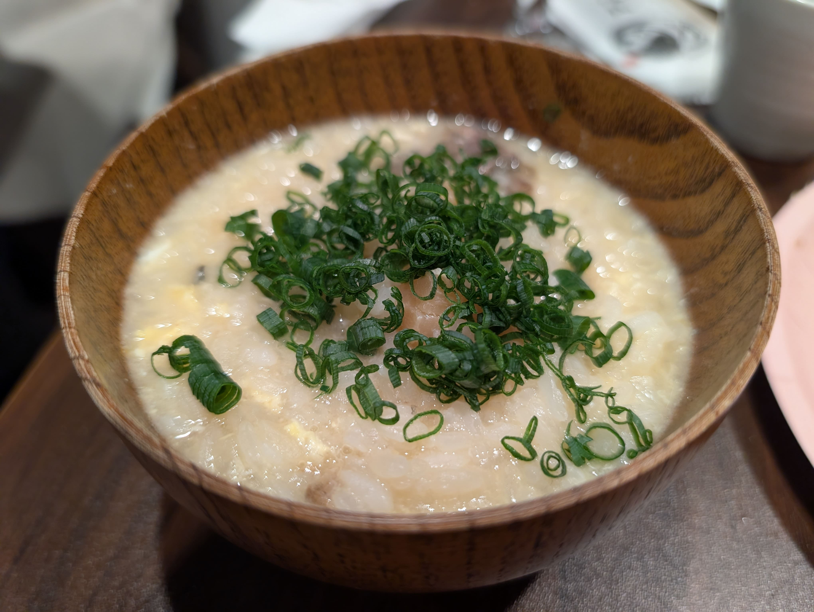
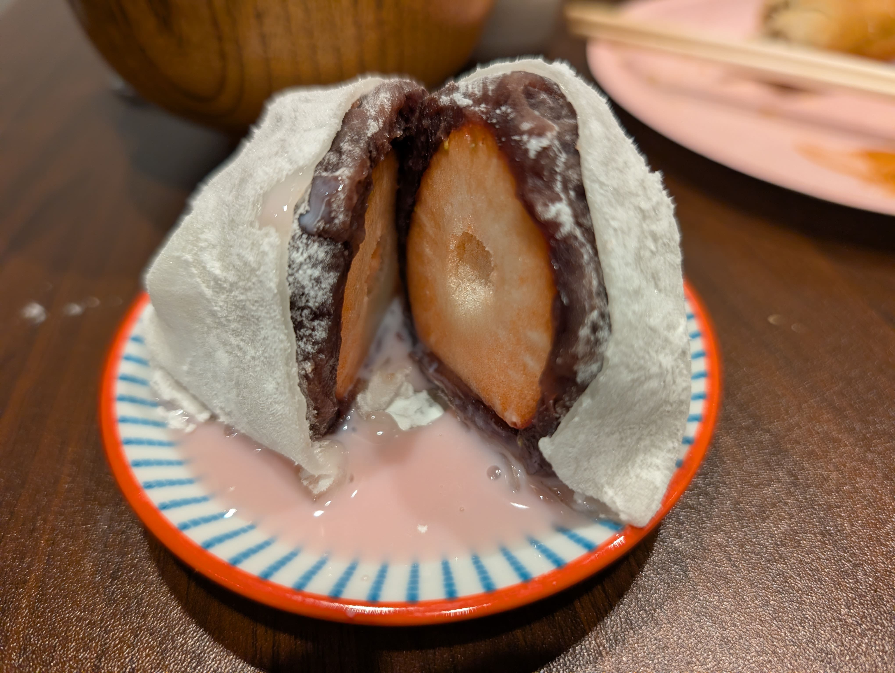

すーさんのおばんざいキッチン
イベントについて
和食料理人「すーさん」をお招きして、特別なおばんざいの時間を開催します。
季節の食材を丁寧に仕込んだ、心温まる「ちょっとリッチ」なおばんざいを、大皿でとりわけながら囲む。そんなアットホームで、でも少し特別な食卓を一緒に作りませんか？
この会では、すーさんの新しい挑戦となる試作メニューもご用意しています。皆様の率直なご感想やフィードバックが、次の企画に活かされる、そんな共創の場になれば幸いです。
堅苦しくない、みんなで食卓を囲む素敵な時間。ぜひお気軽にご参加ください。
ゲスト：すーさん（鈴木 基次）
合同会社FOOD GROOVE JAPAN 代表取締役 / シェフ
「食を通じて人と地域をつなぐ」をミッションに、全国200社以上の生産者と連携し、地方創生プロジェクトや食育イベントを手掛ける食のプロデューサー。
シェフとしての確かな技術と経営ノウハウを持ち、現在は東京・日本橋で直営店「米と魚 さかなさま」のオーナーシェフも務める。
生産者の情熱と地域の文化を正しく伝え、心震える食体験を提供することに情熱を注いでいる。今回は「すーさん」として、皆様にほっとするおばんざいをお届けします。
FOOD GROOVE JAPANについてはこちら。
https://foodgroovejapan.com/
提供内容
すーさんの「ちょっとリッチ」なおばんざい
和食料理人による、季節の食材を使った心温まる数品を、大皿でとりわけるスタイルでご提供します。会話も弾む、みんなで楽しむ食卓です。
試作メニュー（テスト提供）
新たな挑戦となる1〜2品をご用意しています。皆様の反応を伺う実験的なメニューです。
感想シェア・フィードバック
「美味しかった」「もっとこうして欲しい」など、次回の企画に活かすための率直なご意見をいただきます。
ドリンク
アルコールは以下のものをご用意しています。
- ワイン（白・赤）
- ウイスキー（ハイボール）
- 焼酎
- 日本酒
ドリンクの持ち込みは自由です。
※会場の冷蔵庫のスペースに限りがあるため、ビールの十分なご用意が難しくなっております。
ビールやソフトドリンクなど、お好きなお飲み物がございましたら、ぜひお持ち寄りいただきお楽しみください。
ご参加の際のお願い
アレルギーについて
食材のアレルギーがある場合は、申込フォームの備考欄にてお知らせください。可能な限り対応させていただきます。
撮影・SNS掲載について
当日の写真撮影やSNS掲載の可否を、申込フォームにてご確認させていただきます。顔出しNGなど、ご希望に応じて対応いたします。
その他のご注意
- 勧誘や営業目的でのご参加はご遠慮ください。
- 無断での宣伝・営業行為は禁止させていただきます。
よくあるご質問
Q. 途中参加は本当に大丈夫ですか？
A. はい、大丈夫です。ご都合のつく時間からのご参加をお待ちしています。
Q. 食べ物の好き嫌いがあります。対応していただけますか？
A. アレルギーについては必ずお知らせください。その他の好き嫌いについても、可能な限りご相談させていただきます。
Q. 一人での参加でも大丈夫ですか？
A. もちろんです。むしろ新しい出会いの場として、一人での参加をお勧めしています。
Q. 飲まない人でも参加できますか？
A. はい、大丈夫です。ノンアルコールのドリンクをご持参いただければ、同じように楽しんでいただけます。
開催レポート
今回の「すーさんのおばんざいキッチン」は、まさに「採算度外視」の豪華な一夜となりました。
ふぐ、フォアグラ、すっぽん……。高級食材を惜しげもなく使い、和食料理人すーさんの技が光る品々。
スタイルこそ大皿から取り分ける「おばんざい」形式ですが、そのクオリティは料亭のコース料理に匹敵する、本来ならば数万円クラスの内容でした。
参加者の皆様の「美味しい！」という笑顔が、最初から最後まで絶えない素晴らしい時間でした。
また、今回はドリンク持ち込み自由のスタイル。
それぞれがお気に入りのビールやワイン、日本酒を持ち寄り、自然とシェアし合う風景も見られました。
それぞれの「好き」を共有し楽しめるのも、よりみちリビングならではの良さだと改めて感じました。
当日のメニュー
- ・あなごの薬味サラダ 海苔で巻いて
- ・いわし昆布締め 卯の花まぶし
- ・合鴨！フォアグラのおから
- ・ローストビーフ豆腐ようソース／刻みわさび
- ・ものすごい鯖、春菊味噌、炊きごぼうの春巻き
- ・虎フグ、文旦、ディル、松のみ、ムーラン油
- ・鯛かぶら
- ・すっぽん雑炊（万能ねぎ／玉子）
- ・手作りいちご大福
 






